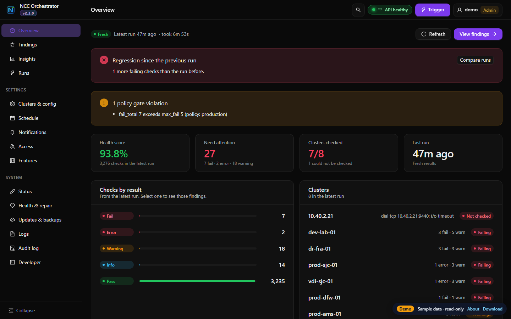

Automate Nutanix cluster health checks
Run NCC checks in parallel, review the results, and resolve issues faster.

Health of every cluster from the latest runs, and what needs attention.
Parallel execution
Run NCC checks across multiple clusters simultaneously.
Actionable analysis
Turn NCC results into findings you can triage.
Unified operations
Track findings through to resolution in one place.
In the app
The pages you work in every day.
OverviewHealth of every cluster and what needs attention.
FindingsEvery result from every cluster by severity; acknowledge, resolve and reopen.
InsightsHealth over time, regressions since the last run, and flapping checks.
RunsScheduled and manual runs with outcome, duration and clusters checked.
ScheduleDaily or hourly scans as a systemd timer, cron job, Windows task or CronJob.
NotificationsSlack, email and signed webhooks, with quiet hours and a digest.
AccessViewer, operator and admin roles; LDAP, OpenID Connect and SAML sign-in.
Health & repairA supervisor that restarts a crashed or hung server, and diagnostics.
Quick start
Linux shown. Download has macOS and Windows.
mkdir ncc
tar -xzf ncc-v2-stack-linux-amd64.tar.gz -C ncc && cd ncc
export NCC_PASSWORD='your-prism-password'
./bin/ncc-orchestrator preflight-check --config example_config.yaml
# start the dashboard on https://localhost:8080
./bin/ncc-orchestrator v2-start --detach --self-heal